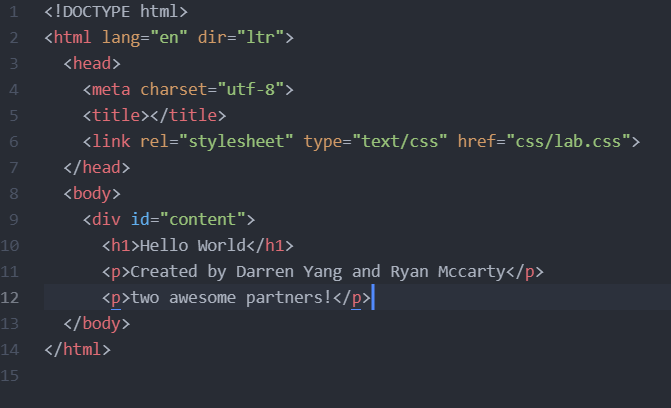
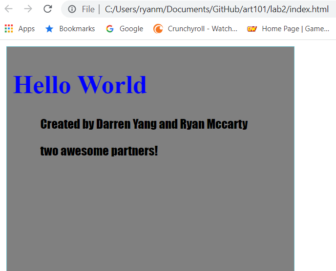
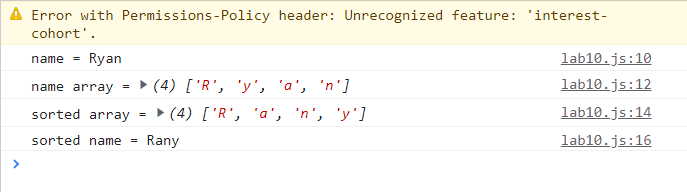

Lab 14 - Debugging Tools and Strategies
By Ryan McCarty and Darren Yang
Our challenge for this lab was to debug our previous labs to ensure they were fully working how we intended them to and without any JavaScript errors..
Some problems we faced were .
All the previous labs are gone over below.
Considering lab 1 did not use any html or JavaScript, there is nothing to debug.
Moving on to lab 2, there were no coding errors, the webpage's HTML and CSS were both working, the only error on it was that we mispelled awesome as 'awsome', which I have fixed, as shown here.
 Lab 3 had no issues to debug, as it was pretty simple html work (both on the homepage and the lab page), just making some headings, paragraphs, links, and images, which all still worked both locally and on my github pages webpages.
Lab 4 was similarly simple and with no issues, just simple html work and the pseudocode was displayed correctly, so there was nothing to debug or change.
Lab 5 was our first lab using JavaScript, but since it was a simple introduction to creating and using variables, it also had no issues in its code and required no changes.
Lab 6 was mostly an extension of what was done in lab 5, using arrays and objects to sort and give more details to the variables used, and it similarly had no issues in need of debugging, all of the information showed up correctly on the webpage.
Lab 7 was our first venture into functions, but since I had plenty of prior experience working with them I was able to make sure our name sort function worked for when we turned it in before, and it still worked now and did not need debugging. I do partially wish the website's content loaded before a name was entered, but I think that is simply because of how window.prompt works and not something I know how to/can fix.
Lab 8 was focused on callbacks and anonymous functions, and we were able to make it work without issues so it had nothing to debug, the functions worked as intended and results were shown in the console.
Lab 9 was one of the labs we struggled with the most at the time, having trouble modifying the elements, but we were eventually able to figure it out and the console shows no errors in need of debugging.
Lab 10 was a mix of labs 7 and 9, once again using the name sorting function but this time combining it with getElementById to be able to be done within the website instead of needing window.prompt. Although it all worked both locally and on the website, something I've noticed on multiple of the Github pages websites is this error, that causes no actual problems but still appears. I don't think it needs to be solved or debugged since the website functions perfectly, but I do wonder what it means.
Lab 11 introduced jQuery, and we used it to create buttons that changed the color of parts of the website. Although we had to try a few things to get it to work at the time, it currently shows no errors and requires no debugging.
Lab 12 had us use a function with conditionals to take a name and assign it to a Hogwarts house, and it was a pretty simple lab that worked and does not require any debugging.
Lab 13 required some early debugging as we worked on it, as we couldn't get the output to appear on the website until we edited and fixed a few parts of the code, but since we did that then, we don't have any debugging to do now.
Overall, since we worked hard on making our labs functional and complete for the first time we turned them in, and debugged our errors back before we turned them in, we had very little debugging or changes to do now.